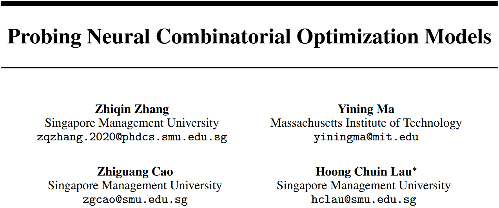

Probing Neural Combinatorial Optimization Models

摘要
本文首次系统性地将探针（probing）方法引入NCO研究，通过设计针对组合优化问题的低级和高级探针任务，揭示了NCO模型学习到的决策相关知识。同时，作者提出了一种新颖的探针分析工具——系数显著性探针（CS‑Probing），通过分析线性探针系数的绝对大小和统计显著性，深入考察模型表示中特定维度所编码的知识。实验表明，NCO模型既捕获了欧氏距离等低级信息，也学会了避免短视决策等高级知识。 CS‑Probing进一步揭示了不同NCO模型的归纳偏置、泛化机制以及关键嵌入维度。 基于这些洞察，仅修改几行代码即可提升模型的泛化性能。该工作为解释黑箱NCO模型提供了首个系统性框架，展示了探针在分析内部机制和指导未来研究方面的潜力。
研究方法
研究动机：尽管NCO模型性能优异，但其内部表征和决策逻辑完全不透明（黑箱）。这导致学术界难以理解模型为何有效，工业界也因缺乏可靠性而不愿部署。因此，迫切需要一种系统的方法来打开NCO模型的黑箱。
研究思路：借鉴自然语言处理和计算机视觉中成熟的探针技术——通过训练简单的辅助预测任务（通常为线性模型）来检测预训练模型的嵌入是否编码了某种特定知识。将该范式迁移到组合优化领域，并针对CO问题的特点设计合适的探针任务。
解决的核心问题：
-
NCO模型学到了哪些与决策相关的知识？（低级特征如距离，高级特征如避免短视）
- 模型如何编码和利用这些知识？（逐层分析、归纳偏置、泛化机制）
对前人工作的改进：
以往NCO的可解释性方法（如梯度归因、神经元消融、可视化）要么只能反映输出对输入的敏感性，要么无法揭示知识在隐藏表示中的存储方式。探针方法通过线性可解码性提供了结构化的可解释框架。本文首次将探针系统应用于NCO，并专门设计了适合CO问题的探针任务。
主要贡献：
-
系统设计了针对TSP和CVRP的低级与高级探针任务，证明NCO嵌入同时包含距离感知和避免短视等知识。
-
提出CS‑Probing方法，通过系数和统计显著性分析，揭示不同NCO模型的归纳偏置差异。
-
识别出编码特定知识的关键嵌入维度，并发现泛化能力强的模型在不同规模任务中一致使用相同的关键维度。
-
基于上述洞察，通过简单正则化（仅修改少量代码）提升了模型的泛化性能，展示了探针分析的实际价值。
方法
1. 探针任务设计
针对TSP和CVRP问题，设计了四个探针任务。每个任务都构造一个数据集：特征来自NCO模型中间层的嵌入（如节点嵌入的拼接或Hadamard积），标签为待探测的知识。训练一个线性探针（线性回归或逻辑回归），若探针性能显著高于随机基线，则说明NCO嵌入线性地编码了该知识。
- 任务1（TSP，低级）：预测两个节点之间的欧氏距离（回归任务，R²指标）。用于检测模型是否感知了距离信息。
- 任务2（TSP，高级）：区分当前节点在全局最优解中应连接的节点（正例）vs. 贪婪算法选择的最近节点（负例）（二分类，AUC指标）。用于检测模型是否学会了避免短视决策。
- 任务3（CVRP，低级）：预测两个节点需求之和（回归）。检测模型是否理解容量约束中的加法关系。
- 任务4（CVRP，高级）：判断两个节点在最优解中是否属于同一条路径（二分类）。检测模型是否编码了与全局结构相关的约束信息。
探针输入包括：仅拼接两个节点的嵌入或再加入交互项 ，以模拟注意力中的兼容性计算。
2. 被分析的NCO模型
选取三种基于Transformer的代表性模型：AM、POMO、LEHD。此外也在附录中测试了扩散模型DIFUSCO、非对称TSP模型MatNet、JSSP的GNN模型，验证探针的普适性。 ##### 3. CS‑Probing（系数显著性探针） 传统探针只报告整体性能（如R²或AUC），无法回答“哪些嵌入维度编码了知识”以及“不同模型的知识分布有何差异”。CS‑Probing在训练线性探针后，进一步分析每个输入特征（即每个嵌入维度）的回归/分类系数的绝对值及其统计显著性（p值）。通过观察哪些维度具有显著的大系数，可以定位知识存储的具体位置；通过比较不同模型或不同泛化场景下这些关键维度的稳定性，可以揭示归纳偏置和泛化机制。 ##### 4. 基于探针洞察的模型改进 发现LEHD仅用两个关键维度（第31和97维）就能保持几乎全部性能。据此假设：鼓励嵌入稀疏性可能提升泛化。实验在LEHD训练时添加L1正则化（稀疏正则），仅修改损失函数几行代码，即显著改善了对更大规模（TSP200/1000）和真实数据集（TSPLib）的泛化性能。
实验
实验设备： An NVIDIA A100-40G GPU with AMD EPYC Milan 7713 CPU。
实验设置：
>
模型：AM、POMO、LEHD（均在TSP和CVRP上预训练，规模20/100节点）。
探针数据集：每个任务生成10k–20k个样本（节点对），标签由精确求解器（Gurobi）或高质量启发式（HGS）获得。
训练：线性探针（岭回归或逻辑回归），评估指标R²（回归）和AUC（分类）。重复10次报告均值±标准误。
泛化测试：在训练时未见过的更大规模（200节点）、不同分布（TSPLib/CVRPLib）上评估。
实验结果
主实验
知识存在性： 初始嵌入（线性投影后）无法线性感知欧氏距离（R²≈0），但经过一层注意力后R²显著上升（LEHD高达0.94）。加入交互项后所有模型R²接近1 → 模型学会了线性表示距离。 探针任务2中，初始嵌入AUC≈0.5（随机），深层嵌入AUC>0.8 → 模型学会了避免短视。 逐层分析：浅层主要编码距离，深层更侧重避免短视的决策知识。


归纳偏置（CS‑Probbing）： LEHD的节点嵌入在少数维度（<20）上激活强烈（绝对值大），AM/POMO激活分散且幅度小 → 不同架构导致不同的知识分布模式。 LEHD的候选节点嵌入比当前节点嵌入具有更多统计显著的特征维度，而AM/POMO无此区别。

泛化机制： 在从20节点泛化到100节点时，LEHD的top‑5关键维度几乎不变（如第31、69、97维），而AM/POMO的关键维度发生剧烈变化。说明泛化好的模型在不同规模任务中一致使用相同维度编码知识。 进一步通过零化实验证实：清零LEHD的两个关键维度导致性能崩溃（最优性差距从0.57%升至60%），而清零非关键维度几乎无影响。


仅用两个维度的性能： 只保留LEHD的第31和97维，丢弃其余126维，模型在100‑2000节点上的最优性差距与使用全128维几乎相同 → 知识高度集中在极少数维度中，暗示模型表示可被大幅压缩。

正则化提升泛化： 对LEHD的最终嵌入施加L1稀疏正则（λ=1e-4），在TSP200上的泛化最优性差距从0.86%降至0.73%，在TSP1000上从3.17%降至2.97%，在TSPLib上从5.26%降至4.94%。验证了基于探针洞察的改进有效。

鲁棒性验证（附录）： 扩散模型DIFUSCO、非对称TSP（MatNet）、作业车间调度（GNN）上均验证探针有效。 在非欧空间（ATSP）和不同架构（GNN）中，探针仍能揭示距离感知和约束编码能力。

消融实验、对比实验

总结
本文首次将探针技术系统地应用于NCO模型的可解释性研究，设计了适合组合优化问题的低级与高级探针任务，证明了NCO模型在嵌入中同时编码了距离感知和避免短视等决策相关知识。提出的CS‑Probing方法通过分析线性探针系数的幅度和统计显著性，进一步揭示了不同模型架构的归纳偏置、泛化机制以及关键知识维度。基于这些发现，仅利用两个关键维度就能保持模型性能，且添加稀疏正则化可显著提升泛化能力。这项工作为打开NCO模型的黑箱提供了新的分析工具和实证基础，也为未来设计更透明、高效、可压缩的神经组合优化模型指明了方向。
附录
更多探针结果（附录C）：完整展示四个探针任务在所有模型层、有无交互项、不同节点规模下的详细数据（表9、表10）。
鲁棒性检查（附录C.2）： 扩散模型DIFUSCO的探针结果（表11）：低层编码距离，高层编码最优边，与Transformer模型一致。 非对称TSP（MatNet）的探针（图13）：验证距离感知在非欧空间同样可探。 JSSP优先约束的探针：AUC达到1，说明GNN模型编码了约束。
CS‑Probing补充图（附录D）： LEHD训练过程中关键维度的逐渐形成（图14）。 三个模型在泛化时前5关键维度的可视化（图15）。 AM/POMO在接近分布（20→21节点）泛化时关键维度保持稳定，与LEHD在大规模泛化时的行为一致（表14）。
CVRP的CS‑Probing结果（表15）：简单加法信息（需求之和）的编码在泛化时仍稳定，但高级“同路径”信息的编码容易混乱。
局限性（附录E）：探针数据集需要大量精确解，计算成本高；对于超大规模问题（CVRP 100节点），用精确求解器不现实，转而使用高质量启发式（HGS）。
笔记
探针与其它可解释方法的区别：梯度归因只能显示输出对输入的敏感度，无法揭示内部表示的结构；神经元消融只能判断某个神经元是否必要，但不能证明该神经元编码了特定知识。探针通过线性可解码性提供了一个“白箱测试”：如果简单模型能从嵌入中提取某个属性，则该属性必然被显式编码。
线性探针的哲学：线性模型的能力弱，若它能预测复杂属性，说明该属性在嵌入中是以线性可分离/可回归的形式存在的。这比使用复杂探针（如MLP）更强地证明了“知识确实被编码”，而非被复杂函数拟合。
CS‑Probing与知识神经元：类似于NLP中的“知识神经元”定位（如GPT中定位事实关联的神经元），CS‑Probing定位的是编码特定组合优化知识的嵌入维度。两者都通过系数显著性进行筛选。
为何LEHD能用两个维度保持性能：LEHD的重解码器设计使每一步的候选节点嵌入都通过注意力与当前节点重新计算，导致决策相关信息被投影到极低维的子空间。这为NCO模型的表示压缩和知识蒸馏提供了新思路。
稀疏正则化的实际意义：通常认为高维嵌入有利于表达复杂函数，但本研究发现强制稀疏不仅不损害性能，反而提升泛化。这可能是因为稀疏正则迫使模型聚焦于真正通用的知识维度，减少对训练分布中噪声特征的过拟合。
参考文献
[5] Alain, G., & Bengio, Y. (2016). Understanding intermediate layers using linear classifier probes. 提出线性探针的基本范式。 [8] Liu, N. F., Gardner, M., Belinkov, Y., Peters, M. E., & Smith, N. A. (2019). Linguistic knowledge and transferability of contextual representations. NLP中探针任务设计的范例，特别是使用交互项（hi⊙hj）探测成对关系。 [11] Kool, W., van Hoof, H., & Welling, M. (2018). Attention, learn to solve routing problems! (AM) 首个基于注意力机制的NCO模型，本文分析的对象之一。 [12] Kwon, Y.-D., Choo, J., Kim, B., Yoon, I., Gwon, Y., & Min, S. (2020). POMO: Policy optimization with multiple optima for reinforcement learning. AM的改进版，本文分析的另一模型。 [13] Luo, F., Lin, X., Liu, F., Zhang, Q., & Wang, Z. (2023). Neural combinatorial optimization with heavy decoder: Toward large scale generalization (LEHD). 轻编码器重解码器结构，本文重点分析并验证其优越泛化性的模型。 [15] Dai, D., Dong, L., Hao, Y., Sui, Z., Chang, B., & Wei, F. (2021). Knowledge neurons in pretrained transformers. 通过探针定位知识神经元，启发了CS‑Probing中的关键维度分析。 [18] Sun, Z., & Yang, Y. (2023). Difusco: Graph-based diffusion solvers for combinatorial optimization. 用于鲁棒性检查的扩散模型。 [47] Kwon, Y.-D., Choo, J., Yoon, I., Park, M., Park, D., & Gwon, Y. (2021). Matrix encoding networks for neural combinatorial optimization (MatNet). 用于非对称TSP的模型，验证探针在非欧空间的有效性。 [48] Zhang, C., Song, W., Cao, Z., Zhang, J., Tan, P. S., & Xu, C. (2020). Learning to dispatch for job shop scheduling via deep reinforcement learning. JSSP的GNN模型，验证探针在不同架构和问题上的普适性。